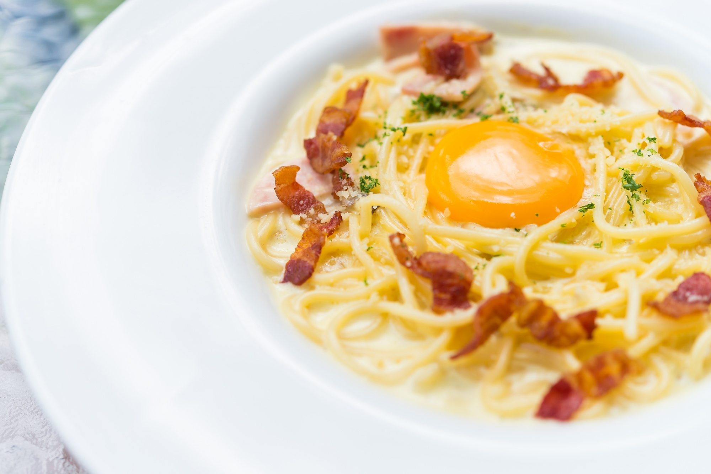
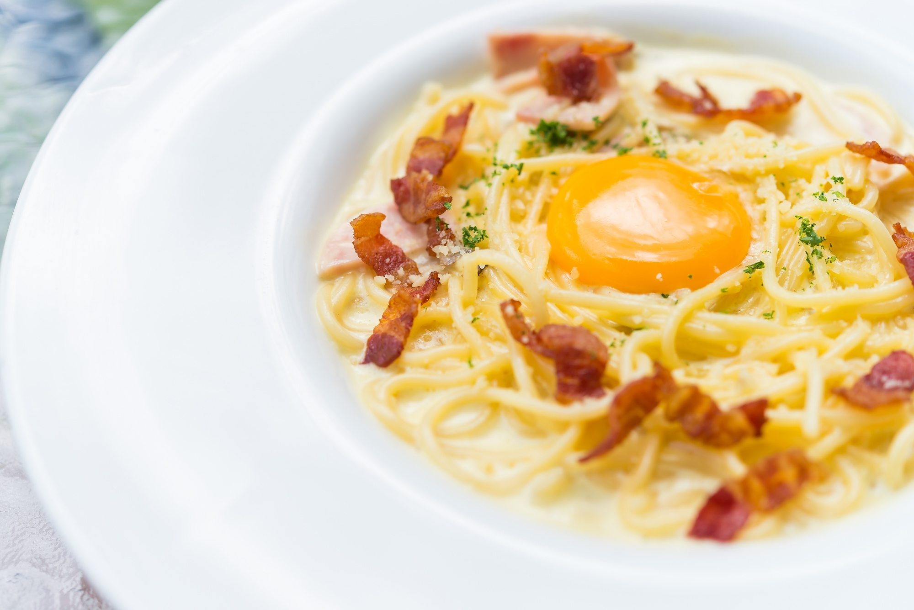

Creamy Carbonara with Pancetta
★★★★★
 


Ingredients
- 400g spaghetti
- 150g pancetta, diced
- 2 large eggs
- 1 cup (100g) grated Parmesan cheese
- 2 cloves garlic, minced
- 1 tbsp olive oil
- Salt and pepper to taste
- Chopped parsley (for garnish)
Instructions
- Bring a large pot of salted water to a boil and cook spaghetti according to package instructions. Reserve 1 cup of pasta water and drain the rest.
- In a bowl, whisk together eggs and grated Parmesan cheese until smooth.
- Heat olive oil in a large skillet over medium heat. Add pancetta and cook until crispy.
- Add minced garlic to the skillet and cook for 1 minute until fragrant.
- Reduce the heat to low and add the drained spaghetti to the skillet. Toss to combine with the pancetta and garlic.
- Remove the skillet from heat and quickly mix in the egg and Parmesan mixture, stirring constantly to create a creamy sauce. Add reserved pasta water as needed to adjust the consistency.
- Season with salt and pepper to taste.
- Garnish with chopped parsley and serve immediately.